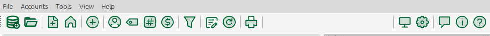
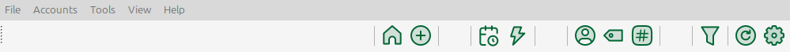
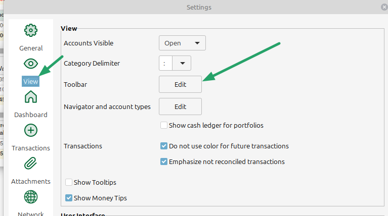
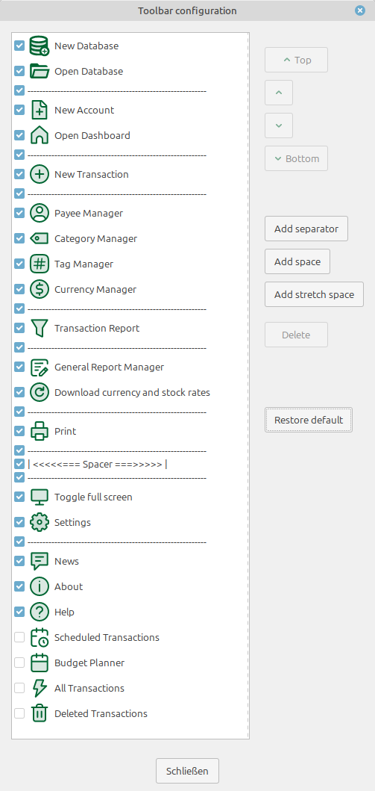
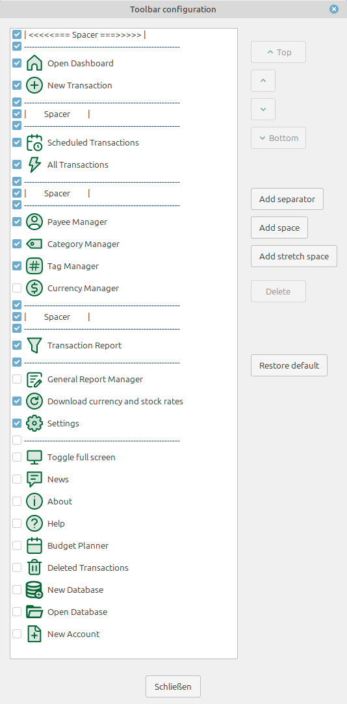

Die MMEX-Symbolleiste kann konfiguriert werden durch:
Ändern der Reihenfolge der Symbolleisten-Schaltflächen
Ausblenden nicht benötigter Schaltflächen
Hinzufügen von Trennlinien und Abständen zwischen den Schaltflächen
Beispiel: Standard-Symbolleiste:

Angepasste Symbolleiste:

Der Konfigurationsdialog
Öffnen
Der Dialog zur Symbolleisten-Konfiguration kann entweder im Einstellungsmenü Extras → Einstellungen… geöffnet werden:

oder mit einem Rechtsklick auf die Symbolleiste.
Dialogfenster
Ansicht des Bearbeitungsdialogs mit Standardkonfiguration:

vs.
Ansicht nach der Anpassung:

Ändern der Schaltflächen-Reihenfolge
Um die Reihenfolge der Symbolleisten-Schaltflächen zu ändern, wählen Sie einfach eine Schaltfläche aus und verschieben Sie sie mit Hilfe der Schaltflächen Ganz nach oben/↑/↓/Ganz nach unten an die gewünschte Position.
Eine Symbolleisten-Schaltfläche ausblenden
Symbolleisten-Schaltflächen können im Panel ausgeblendet werden, indem sie abgewählt werden. Z. B. eine nicht benötigte Hilfe-Schaltfläche.
Strukturelemente hinzufügen oder löschen
Drei verschiedene Strukturelemente können über die entsprechenden Schaltflächen hinzugefügt oder entfernt werden:
Trennlinie: Eine vertikale Linie zur optischen Trennung von Schaltflächen.
Abstand: Ein fester Abstand (Größe entspricht der Symbolgröße der Symbolleiste)
Flexibler Abstand: Ein variabler Abstand, der den verbleibenden Platz in der Symbolleiste einnimmt. Wenn mehrere hinzugefügt werden, wird der verbleibende Platz gleichmäßig aufgeteilt.
Anpassungen rückgängig machen
Mit der Schaltfläche Standard wiederherstellen wird die Standardkonfiguration der Symbolleiste wiederhergestellt.
Hinweise
Die Symbolleisten-Konfiguration wird in der MMEX INI-Datei gespeichert und für alle Datenbanken verwendet, die mit dieser Programminstanz geöffnet werden.